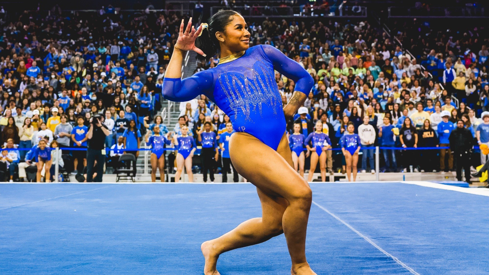

Chiles represented the United States at the 2020 Summer Olympics and won a silver medal in the team event. She was a member of the team that won gold at the 2022 World Championships. Individually, she is the 2022 World vault silver medalist and floor silver medalist.
At the Olympic Games Chiles performed the all-around during qualifications. She finished 40th after struggles on multiple events: on uneven bars she brushed her feet on the ground during a transition between the bars, incurring a deduction equivalent to that of a fall; on balance beam she fell on her acrobatic series and put her hands down on her dismount. Her performance helped qualify the USA team to the team final in second place behind the Russian Olympic Committee.
During the team final Chiles was initially set to compete only on vault and floor exercise. However, Simone Biles withdrew from the competition after the first rotation and Chiles replaced her on uneven bars and balance beam. She hit both of those routines despite not having warmed up on either, but fell on her third pass on floor exercise. The United States won the silver medal, finishing second behind the Russian Olympic Committee.
During the fall of 2021 Chiles joined Simone Biles' Gold Over America Tour alongside Bruin alum Katelyn Ohashi. She joined the Bruins gymnastics team in December. Chiles made her NCAA debut on January 17, 2022 in a meet against Iowa and Minnesota. She only competed on the uneven bars and vault. On February 4, in a meet against Utah, Chiles earned her first collegiate perfect ten on floor exercise. She also won the all-around with a score of 39.700. As a result Chiles was named Pac-12 freshman of the week.
